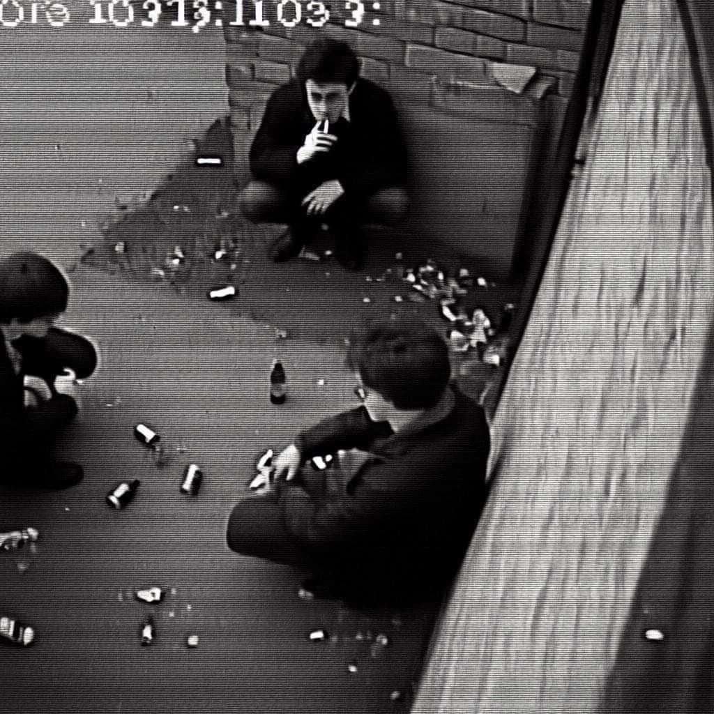

About Me
Halo, perkenalkan Nama Saya Yoshua Pandawinatha atau biasa dipanggil Yosh. Umur saya (pada saat pembuatan website) 18 tahun. Saya berasal dari Kutai Barat, Kalimantan Timur.
Tentang Hobi, saya Tidak Punya hobi yang spesifik yang saya sukai, saya menyukai apa yang ingin saya lakukan sesaat, setelah itu biasanya sayaa akan meninggalkan sesuatu yang biasa orang sbeut dengan hobi tersebut. motivasi saya adalah kegagalan adalah kesuksesan yang tertunda. Kelebihan saya yaitu saya orang yang sangat fokus ketika sedang mengerjakan suatu hal. Karena itu terdapat
kekurangannya juga yaitu saya jadi suka mengabaikan atau menunda hal lainnya jika terdapat suatu hal yang harus saya kerjakan.
Pendidikan

Saya memulai pendidikan saya dari TK di Kutai Barat yaitu TK Pancaran Kasih selama 2 Tahun. Kemudian saya masuk SDN 001 Nyuatan pada saat berusia 6 Tahun.
Setelah menempuh pendidikan di SD selama 6 tahun, saya masuk ke SMP 01 Nyuatan dan belajar disana selama 3 Tahun. Kemudian lanjut ke jenjang SMK, saya bersekolah di SMK Negeri 5 Samarinda. di Smk Negeri 5 Samarinda Saya mengambil Jurusan Teknik Komputer dan Jaringan Setelah 3 tahun di SMA, Alhamdulillah saya
lanjut kuliah dan diterima di Universitas Brawijaya Malang Jurusan Sistem Informasi melalui Seleksi Undangan Nasional PTN. Sampai saat ini saya masih berkuliah di Universitas Brawijaya dan akan masuk di Semester 5.
Hard Skill